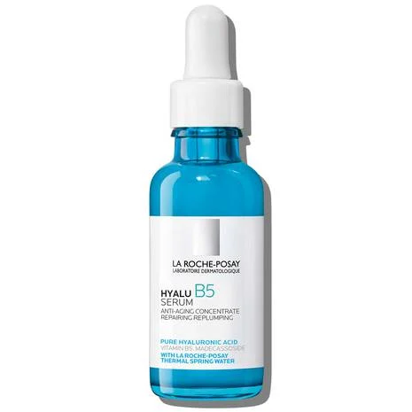

CeraV daily moisturizer lotion
Oil-free moisturizer with hyaluronic acid that helps hydrate the skin and restore its natural barrier.Formulated with 3 essential ceramides that work together to lock in skins moisture and help restore your skin’s protective barrier.

the ordinary serum for all skin type
Hydration support formula with ultra-pure,vegan hyaluronic acid Lightweight serum provides powerful hydration with vitamin B5 Enhance surface moisture,
along with hyaluronic acid The innovative formula features low,
medium and high molecular weight HA Hydration support formula with ultra-pure,
vegan hyaluronic acid Lightweight serum provides powerful hydration with vitamin B5 Enhance surface moisture, along with hyaluronic acid

leaves skin feeling plump to the touch and helps repair skin by replenishing the natural moisture barrier
. This serum combines concentrated pure hyaluronic acid, madecassoside and vitamin B5 for optimal effectiveness while also being suitable for sensitive skin.
laroche-posay serum
This anti-aging ultra hydrating pure hyaluronic acid face and neck serumleaves skin feeling plump to the touch and helps repair skin by replenishing the natural moisture barrier
. This serum combines concentrated pure hyaluronic acid, madecassoside and vitamin B5 for optimal effectiveness while also being suitable for sensitive skin.